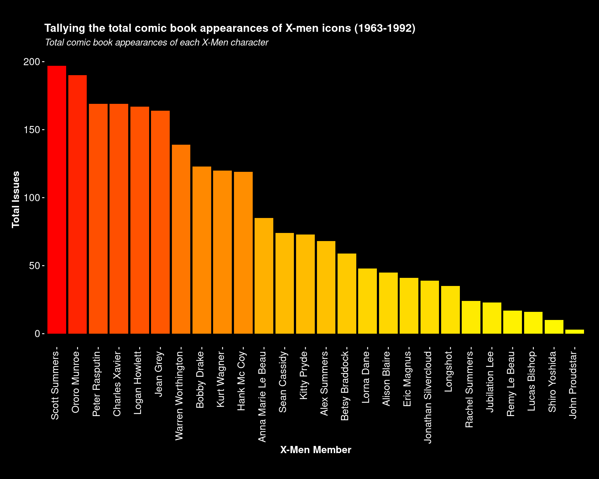
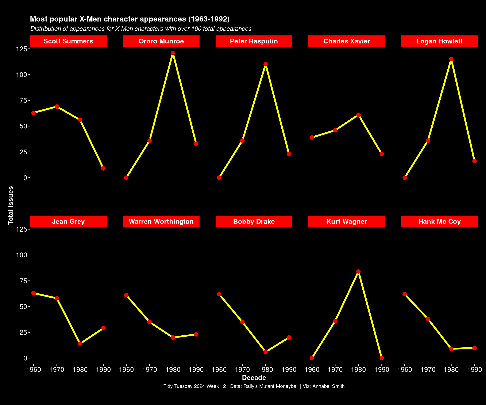
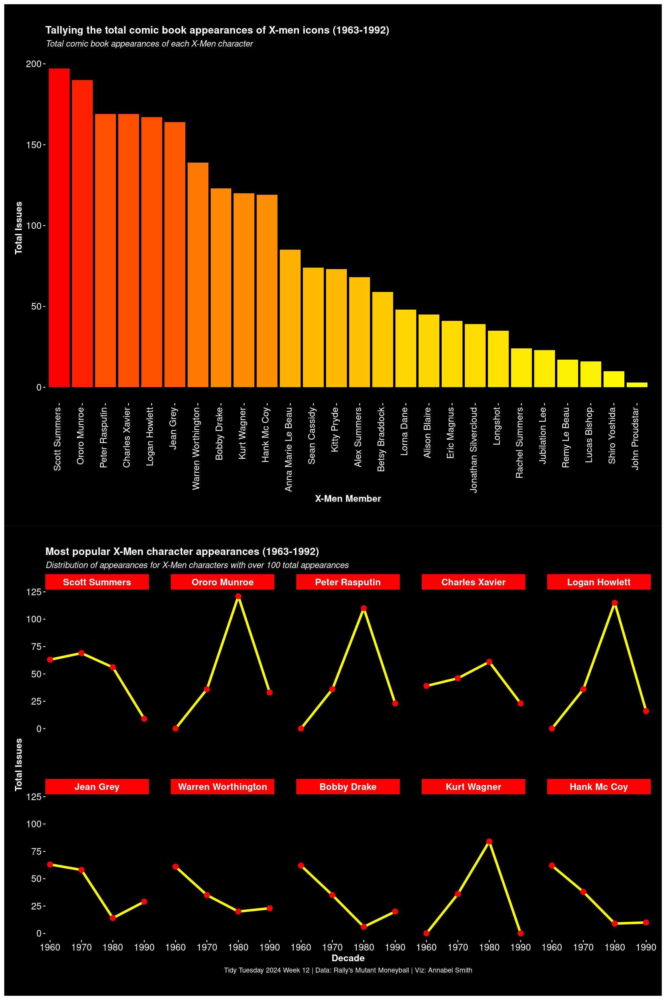

Analyzing the popularity of X-Men characters across decades (1963-1992)
Published
March 25, 2025
Introduction
For this week’s Tidy Tuesday, I explored the “Mutant Moneyball” dataset, which catalogs the appearances of X-Men characters in comic books from 1963 to 1992. This dataset is inspired by the concept of “Moneyball” (made famous in baseball analytics) but applied to the fictional world of Marvel’s mutants.
The X-Men, created by Stan Lee and Jack Kirby in 1963, have been a staple of Marvel Comics for decades. This analysis looks at which characters appeared most frequently throughout different eras, tracking the popularity and evolution of the team’s roster over three decades.
The Data
The dataset contains information on each X-Men character’s appearances across different decades, including:
Character names
Total appearances
Appearances per decade (1960s, 1970s, 1980s, 1990s)
First appearance date
Let’s first take a look at the data structure:
# Display structure in a more readable formatstr(mutant_moneyball[, 1:7]) # Only showing first 7 columns for clarity
# View the first few rowshead(mutant_moneyball[, 1:7]) %>%# Only showing first 7 columns for claritykable() %>%kable_styling(bootstrap_options =c("striped", "hover", "condensed"), full_width =FALSE)
Member
TotalIssues
TotalIssues60s
TotalIssues70s
TotalIssues80s
TotalIssues90s
totalIssueCheck
warrenWorthington
139
61
35
20
23
139
hankMcCoy
119
62
38
9
10
119
scottSummers
197
63
69
56
9
197
bobbyDrake
123
62
35
6
20
123
jeanGrey
164
63
58
14
29
164
alexSummers
68
8
13
43
4
68
Data Preparation
The character names in the dataset use CamelCase format (e.g., “ProfessorX”). Let’s create a function to format these names for better readability in our visualizations:
# Function to format namesformat_names <-function(name) { words <-str_split(name, "(?=[A-Z])")[[1]] capitalized_words <-str_to_title(words) formatted_name <-paste(capitalized_words, collapse =" ")return(formatted_name)}# Apply the function to format character names using sapply instead of map_chrmutant_moneyball <- mutant_moneyball %>%mutate(Member =sapply(Member, format_names))# Check the formatted nameshead(mutant_moneyball$Member)
Let’s first look at which X-Men characters appeared most frequently in comics during this period:
# Select and reorder based on total issuesmutant_moneyball_TI <- mutant_moneyball %>%select(Member, TotalIssues) %>%arrange(desc(TotalIssues)) %>%mutate(Member =factor(Member, levels =unique(Member)))# Display top 10 charactersmutant_moneyball_TI %>%head(10) %>%kable(col.names =c("Character", "Total Appearances"),caption ="Top 10 X-Men Characters by Number of Appearances (1963-1992)") %>%kable_styling(bootstrap_options =c("striped", "hover", "condensed"), full_width =FALSE)
Top 10 X-Men Characters by Number of Appearances (1963-1992)
Character
Total Appearances
Scott Summers
197
Ororo Munroe
190
Peter Rasputin
169
Charles Xavier
169
Logan Howlett
167
Jean Grey
164
Warren Worthington
139
Bobby Drake
123
Kurt Wagner
120
Hank Mc Coy
119
Visualizing Total Appearances
Now, let’s create a visualization showing the total comic appearances for each X-Men character:
# Create plot of total issues per memberp1 <-ggplot(mutant_moneyball_TI, aes(x = Member, y = TotalIssues, fill = TotalIssues)) +geom_col() +scale_fill_gradient(low ="yellow", high ="red") +labs(title ="Tallying the total comic book appearances of X-men icons (1963-1992)",subtitle ="Total comic book appearances of each X-Men character",x ="X-Men Member",y ="Total Issues") +theme_minimal() +theme(axis.text.x =element_text(angle =90, hjust =1, vjust =0.2, size =12, color ="white"),axis.text.y =element_text(color ="white", size =12),plot.caption =element_text(hjust =0.5),plot.background =element_rect(fill ="black"),text =element_text(color ="white"),panel.background =element_blank(),panel.grid =element_blank(),axis.ticks =element_line(color ="white"),plot.margin =margin(1, 0.5, 1, 0.5, "cm"),axis.title =element_text(face ="bold", size =12),plot.title =element_text(face ="bold"),plot.subtitle =element_text(face ="italic") ) +guides(fill ="none")# Display the plotp1

The visualization clearly shows that certain characters like Professor X, Cyclops, and Storm have significantly more appearances than others, reflecting their importance as core team members.
Appearances Over Time
Next, let’s analyze how the appearances of the most popular X-Men characters changed over the decades from the 1960s to the 1990s:
# Look at the appearances of the most popular members over timemutant_moneyball_decades <- mutant_moneyball %>%filter(TotalIssues >100) %>%arrange(desc(TotalIssues)) %>%mutate(Member =factor(Member, levels =unique(Member))) %>%select(Member, TotalIssues60s, TotalIssues70s, TotalIssues80s, TotalIssues90s) %>%rename("1960"= TotalIssues60s, "1970"= TotalIssues70s, "1980"= TotalIssues80s, "1990"= TotalIssues90s) %>%gather('1960', '1970', '1980', '1990', key ="Decade", value ="TotalIssues") %>%arrange(Member) %>%mutate(Decade =as.numeric(Decade))# Create a line plot showing appearances over time for each popular characterp2 <-ggplot(mutant_moneyball_decades, aes(x = Decade, y = TotalIssues)) +geom_line(linewidth =1.5, color ="yellow") +geom_point(size =3, color ="red") +facet_wrap(~Member, ncol =5) +labs(title ="Most popular X-Men character appearances (1963-1992)",subtitle ="Distribution of appearances for X-Men characters with over 100 total appearances",caption ="Tidy Tuesday 2024 Week 12 | Data: Rally's Mutant Moneyball | Viz: Annabel Smith",x ="Decade",y ="Total Issues") +theme_minimal() +theme(axis.text =element_text(color ="white", size =12),plot.caption =element_text(hjust =0.5),plot.background =element_rect(fill ="black"),text =element_text(color ="white"),panel.background =element_blank(),panel.grid =element_blank(),axis.ticks =element_line(color ="white"),plot.margin =margin(1, 0.5, 1, 0.5,"cm"),axis.title =element_text(face ="bold", size =12),plot.title =element_text(face ="bold"),plot.subtitle =element_text(face ="italic"),panel.spacing.x =unit(1, "cm"), panel.spacing.y =unit(2, "cm"),strip.text =element_text(color ="white", face ="bold", size =12),strip.background =element_rect(color =NA, fill ="red") )# Display the plotp2

Character Appearances by Decade
To better understand how the X-Men roster evolved over time, let’s analyze the distribution of appearances across decades:
# Calculate the percentage of appearances in each decadedecade_summary <- mutant_moneyball %>%filter(TotalIssues >50) %>%mutate(Pct60s = TotalIssues60s / TotalIssues *100,Pct70s = TotalIssues70s / TotalIssues *100,Pct80s = TotalIssues80s / TotalIssues *100,Pct90s = TotalIssues90s / TotalIssues *100 ) %>%select(Member, TotalIssues, Pct60s, Pct70s, Pct80s, Pct90s) %>%arrange(desc(TotalIssues))# Display the distribution of appearancesdecade_summary %>%head(10) %>%mutate(Pct60s =round(Pct60s, 1),Pct70s =round(Pct70s, 1),Pct80s =round(Pct80s, 1),Pct90s =round(Pct90s, 1) ) %>%kable(col.names =c("Character", "Total Appearances", "1960s (%)", "1970s (%)", "1980s (%)", "1990s (%)"),caption ="Percentage of Appearances by Decade for Top X-Men Characters") %>%kable_styling(bootstrap_options =c("striped", "hover", "condensed"), full_width =FALSE) %>%row_spec(1:3, background ="#FFF8DC")
Percentage of Appearances by Decade for Top X-Men Characters
Character
Total Appearances
1960s (%)
1970s (%)
1980s (%)
1990s (%)
Scott Summers
197
32.0
35.0
28.4
4.6
Ororo Munroe
190
0.0
18.9
63.7
17.4
Peter Rasputin
169
0.0
21.3
65.1
13.6
Charles Xavier
169
23.1
27.2
36.1
13.6
Logan Howlett
167
0.0
21.6
68.9
9.6
Jean Grey
164
38.4
35.4
8.5
17.7
Warren Worthington
139
43.9
25.2
14.4
16.5
Bobby Drake
123
50.4
28.5
4.9
16.3
Kurt Wagner
120
0.0
30.0
70.0
0.0
Hank Mc Coy
119
52.1
31.9
7.6
8.4
Combined Visualization
Finally, let’s combine our visualizations to create a comprehensive view of X-Men character appearances:
# Combine the two plotscombined_plots <- p1 / p2# Display the combined visualizationcombined_plots

Key Findings
From our analysis of the X-Men comic book appearances from 1963 to 1992, we can observe several interesting patterns:
Core Team Members: Professor X, Cyclops, and Storm stand out as the most frequently appearing characters, reflecting their roles as core team members and leaders throughout the X-Men’s history.
Generational Shifts: The data reveals clear generational shifts in the X-Men roster. Original team members like Cyclops and Beast were prominent in the 1960s, while characters like Storm, Colossus, and Wolverine rose to prominence in the late 1970s and 1980s.
1980s Explosion: There was a significant increase in appearances for most characters during the 1980s, corresponding to the era when the X-Men became one of Marvel’s most popular franchises, particularly after the “Dark Phoenix Saga” and introduction of characters like Wolverine.
Evolving Team Dynamics: While some characters like Professor X maintained relatively consistent appearances across all decades, others show more variable patterns, reflecting changing team rosters and storylines.
Rise of Wolverine: Despite not being an original team member, Wolverine quickly became one of the most featured characters after his introduction, highlighting his rapid rise to popularity.
Conclusion
This analysis provides insights into the evolution of the X-Men team over three critical decades of their publication history. The visualization techniques used here could be applied to other media franchises to track character popularity and narrative focus over time.
The clear generational shifts visible in the data reflect not only the evolving storylines within the X-Men universe but also changing editorial directions and reader preferences. Characters who maintained high appearance rates across multiple decades can be seen as the backbone of the franchise, while those with more concentrated appearances might represent specific eras or storytelling approaches.
For future analysis, it would be interesting to correlate these appearance counts with other metrics such as comic book sales figures, character introduction dates, or major storyline events to gain deeper insights into what drove the popularity of certain characters during specific time periods.